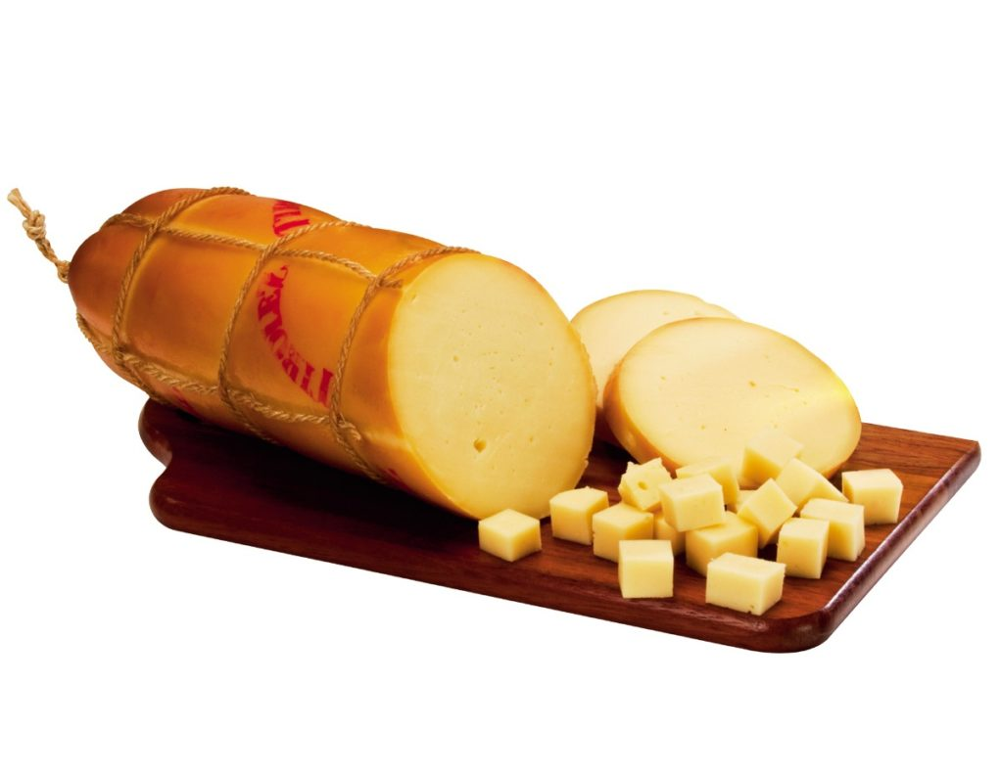

SOBREMESAS SAUDÁVEIS PARA O FINAL DE SEMANA
MUFFIN DE BANANA
ITENS PARA RECEITA DE MUFFIN DE BANANA
- 2 ovos
- 1 xícara de chá de açucar mascavo
- 1/2 xícara de chá de óleo
- 1/2 xícara de chá de leite
- 1 1/2 xícara de chá de farinha de trigo integral
- Canela em pó (a gosto)
- Baunilha (a gosto)
- 2 bananas em rodelinhas
BOLO SEM TRIGO
INGREDIENTES
- Farelo de aveia
- Germem de trigo
- Açucar mascavo
- Coco
- Uva passa
- Castanha do Pará
RECEITA DE BOLO DE CHOCOLATE

INGREDIENTES PARA A MASSA
- 1 xícara de chocolate em pó
- 1 xícara de água quente
- 1 1/2 xícara de chá de açucar
- 3 ovos
- 1 xícara de chá de óleo
- 1 colher de chá de sal
- 2 xícaras de farinha de trigo
- 1 colher de sopa de fermento
MODO DE PREPARO
Misture tudo, despeje em uma forma de 20x30cm untada. Leve ao forno pré aquecido
(10 a 15 min antes dependendo da potência do seu forno). Assar de 35 a 40 min,
fazer o teste do palito.
INGREDIENTES PARA A COBERTURA
- 1 caixa de leite condensado (395ml)
- 3 colheres de sopa de chocolate em pó
- 1 colher de sopa de manteiga
- 1 pacote de 50g de chocolate granulado (opcional)
MODO DE PREPARO
Ponha tudo numa panela e cozinhe até engrossar e soltar do fundo. Espere de 5 a 10min
e pode cobrir o bolo de chocolate, para finalizar é só jogar o chocolate granulado por cima.
Tipos de queijo
- Provolone

-
Um queijo proveniente da Itália, porém constantemente encontrado em mercados do Brasil.
Com o seu sabor levemente picante e uma consistência mais firme, é ideal para derreter na churrasqueira.
- Mozzarella
-
O queridinho de todos! Quando fresco sua textura é tenra e borrachuda, depois de onze dias de maturação,
essa variedade adquire consistência mais cremosa. É um queijo de origem italiana, tipicamente culinário.
Pode consumir frio, puro ou em saladas, ou cozido, compondo saborosas pizzas, massas e recheios.
- Roquefort
-
O queijo de origem francesa é feito a partir do leite de ovelha. O sabor encorpado e um pouco picante
combina perfeitamente sobre o medalhão da carne. Invista em preparar molhos com esta variedade.
- Cottage

-
O cottage possui a consistência granulada, com textura heterogênea granulosa e cremosa. Foi levado pela
cultura inglesa aos Estados Unidos, sendo hoje um dos mais consumidos. É ideal para receitas vinculadas
a regimes, pois possui poucas calorias.
- Mascarpone
-
O Mascarpone é de origem italiana. Sua textura extremamente cremosa e um leve toque agridoce,
torna-o perfeito para combinar com doces. Se você estiver pensando em preparar uma torta
de frutas vermelhas, experimente usá-lo como recheio.
- Ricota
-
O queijo também de origem italiana possui um sabor extremamente suave.
Combina perfeitamente com um sanduíche feito com pão de casca dura.
- Parmesão

-
De origem italiana, com sabor picante e textura levemente cristalizada.
Fica perfeito para acompanhar massas e para gratinar pratos.
- Edam
-
O queijo de origem holandesa é produzido com leite pasteurizado de vaca, de massa semi-cozida e prensada.
É ideal para o consumo puro, em tábuas de queijo. É possível saboreá-lo em muitas festas de queijos
e vinhos, pois combina muito com a uva tipo Itália e vinho branco frutado.
- Gorgonzola
-
O queijo de origem italiana é preparado com o leite de vaca. Sabor intenso e picante!
Opte por comê-lo misturado com saladas de sabor suave ou então picado e puro.
- Prato
-
Vindo lá do sul de Minas, o queijo possui uma massa de consistência firme. Porém é utilizado muito em lanches,
pois derrete facilmente. Também combina com embutidos de carne, quentes ou frios.
Cronograma de almoço semana 1
Dias da semana
Saladas
Carnes
Frutas
| Segunda |
Alface e rúcula |
Carne de frango |
Maça |
| Terça |
Repolho |
Feijão |
Laranja |
| Quarta |
Alface e espinafre |
Ovos |
Ameixa |
| Quinta |
Couve manteiga |
Feijão |
Tangerina |
| Sexta |
Alface e agrião |
Peixe |
Pêssego |
| Sábado |
Alface e couve manteiga |
Carne de porco |
Manga |
| Domingo |
Tomate e pepino |
Carne de gado |
Abacaxi |
Tabela da dieta da Tati - Cronograma da semana 1.